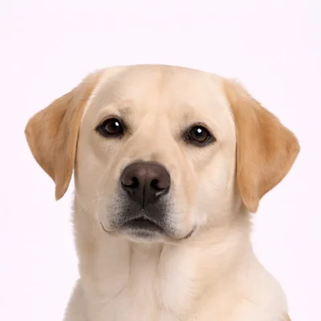
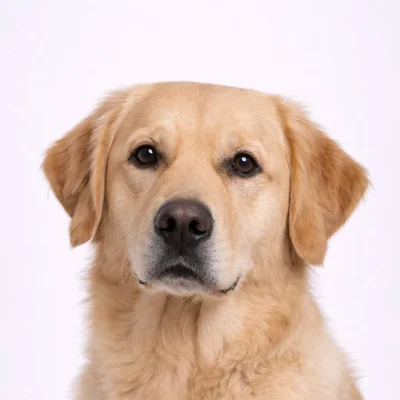

Labradorinnoutaja vs Kultainennoutaja
Kaksi suosituinta perhekoiraa. Molemmat ovat ystävällisiä, älykkäitä ja hyviä lasten kanssa — mutta kumpi sopii sinulle?

Labradorinnoutaja
Amerikan #1 rotu
Labradorinnoutaja on syystä Amerikan suosituin koirarotu. Ne ovat ystävällisiä, ulospäin suuntautuneita ja pirteähenkkisiä kumppaneita, joilla riittää rakkautta jaettavaksi.
Katso koko profiili →
Kultainennoutaja
Perheen suosikki
Kultainennoutaja on yksi suosituimmista koiraroduista. Niiden ystävällinen ja suvaitsevainen luonne tekee niistä loistavia perhelemmikkejä, ja älykkyytensä ansiosta ne ovat erinomaisia työkoiria.
Katso koko profiili →Rinnakkaisvertailu
| Ominaisuus | Labrador | Kultainen |
|---|---|---|
| 📏 Koko |
Suuri 55-62 cm, 25-36 kg |
Suuri 51-61 cm, 25-34 kg |
| ⏳ Elinikä | 10-12 vuotta | 10-12 vuotta |
| ⚡ Energiataso |
●●●●●
Erittäin korkea
|
●●●●○
Korkea
|
| ✂️ Turkinhoito |
●●○○○
Matala-keskitaso
|
●●●○○
Keskitaso
|
| 🎓 Koulutettavuus |
●●●●●
Erinomainen
|
●●●●●
Erinomainen
|
| 👶 Lapsiystävällisyys |
●●●●●
Erinomainen
|
●●●●●
Erinomainen
|
| 🏠 Asuntosopivuus |
●●○○○
Ei ihanteellinen
|
●●○○○
Ei ihanteellinen
|
| 🐕 Karvanlähtö | Runsas | Erittäin runsas |
| 🌍 Alkuperä | Kanada (Newfoundland) | Skotlanti |
🧠 Labradorin luonne
Labradorit ovat tunnettuja ystävällisyydestään ja kiintyvät koko perheeseen. Ne tulevat hyvin toimeen naapurin koirien ja ihmisten kanssa. Älä sekoita niiden rentoa persoonallisuutta matalaan energiaan — ne tarvitsevat paljon liikuntaa!
🧠 Kultaisen luonne
Kultaisetnoutajat ovat avoimia, luotettavia ja innokkaita miellyttämään. Ne ovat ihania lasten ja muiden lemmikkien kanssa. Niiden kärsivällinen ja lempeä luonne tekee niistä erinomaisia terapiakoiria.
🏃 Liikuntavaatimukset
Korkea energiataso vaatii vähintään 1-2 tuntia reipasta päivittäistä liikuntaa. Ne rakastavat uimista, noutamista ja ulkoiluseikkailuja.
Korkea energiataso, mutta hieman vähemmän intensiivinen kuin Labradoreilla. Vähintään 1 tunti päivittäistä liikuntaa. Ne loistavat noudossa, uinnissa ja patikoinnissa.
✂️ Turkinhoitovaatimukset
Viikoittainen harjaus, enemmän karvanvaihtokauden aikana. Lyhyt, tiheä turkki on suhteellisen helppohoitoinen, mutta karva lähtee runsaasti.
Päivittäinen harjaus suositeltavaa karvanvaihtokauden aikana. Pidempi höyhenturkkiin tarvitsee enemmän huomiota takkuläisen ehkäisemiseksi.
🎯 Kumpi sopii sinulle?
Valitse Labrador jos...
- ✓ Haluat korkeimman energiatason
- ✓ Suosit hieman vähemmän turkinhoitoa
- ✓ Haluat monipuolisen urheilukoiran
- ✓ Rakastat ulospäinsuuntautunutta, innostunutta persoonallisuutta
- ✓ Värivalikoima on tärkeä (musta, keltainen, suklaa)
Valitse Kultainen jos...
- ✓ Suosit hieman rauhallisempaa luonnetta
- ✓ Rakastat kaunista kultaista turkkia
- ✓ Haluat erinomaisen terapia-/avustajakoiran
- ✓ Arvostat lempeää, kärsivällistä luonnetta
- ✓ Et haittaa useammin harjaamista
Yhteenveto
Molemmat rodut ovat erinomaisia perhekoiria. Labradorit ovat hieman energisempiä ja turkin osalta helpompihoitoisia, kun taas Kultaisetnoutajat tunnetaan lempeästä kärsivällisyydestään ja kauniista turkistaan. Kumpi tahansa valinta tuo vuosiksi rakkautta ja kumppanuutta perheellesi!